source("../R/setup.R")Section 5: Opaque Preprocessing
Lack of Reporting & Standardization in Dataset Usage
Load Data
papers <- load_papers()Rows: 280 Columns: 14
── Column specification ────────────────────────────────────────────────────────
Delimiter: ","
chr (14): new_dataset_id, name, paper, org_id, task_id, task, data_spec, STA...
ℹ Use `spec()` to retrieve the full column specification for this data.
ℹ Specify the column types or set `show_col_types = FALSE` to quiet this message.Helper Function(s)
save_reproducibility <- function (data, name = NULL) {
dir <- file.path(data_dir, "intermediate", "reproducibility")
if (is.null(name)) { name <- enexpr(data) }
dir.create(dir, showWarnings = F)
write_csv(
data,
file.path(dir, paste0(name, ".csv"))
)
}Analysis 1: Lack of Documentation in Usage
Exclude all non-prediction papers from this analysis, as it’s hard to make them fit into the “box” of our annotation scheme.
papers %>% count(is_prediction_task)# A tibble: 2 × 2
is_prediction_task n
<chr> <int>
1 No 18
2 Yes 262papers_reproducibility <- papers %>%
filter(is_prediction_task == "Yes")Quality of Information Available
info_quality_counts <- papers_reproducibility %>%
select(starts_with("info_")) %>%
pivot_longer(everything()) %>%
count(name, value) %>%
mutate(
# Add explicit order
value = factor(
value,
levels = c("Yes", "Guessable", "No", "Not Applicable")
),
name = case_match(
name,
"info_target" ~ "Target (y)",
"info_protected" ~ "Protected Attributes (S)",
"info_features" ~ "Features (X)"
)
) %>%
group_by(name) %>%
mutate(
frac = n / sum(n),
sum_n = sum(n)
) %>%
ungroup()
info_quality_counts# A tibble: 12 × 5
name value n frac sum_n
<chr> <fct> <int> <dbl> <int>
1 Features (X) Guessable 34 0.130 262
2 Features (X) No 98 0.374 262
3 Features (X) Not Applicable 12 0.0458 262
4 Features (X) Yes 118 0.450 262
5 Protected Attributes (S) Guessable 29 0.111 262
6 Protected Attributes (S) No 23 0.0878 262
7 Protected Attributes (S) Not Applicable 13 0.0496 262
8 Protected Attributes (S) Yes 197 0.752 262
9 Target (y) Guessable 12 0.0458 262
10 Target (y) No 41 0.156 262
11 Target (y) Not Applicable 11 0.0420 262
12 Target (y) Yes 198 0.756 262fig_bar_enough_info <- info_quality_counts %>%
ggplot(aes(
x = n,
y = name,
fill = value
)) +
geom_bar(position = position_fill(reverse = TRUE), stat = "identity") +
scale_fill_manual(
values = c(
"Guessable" = "#ff7f00",
"No" = "#e41a1c",
"Yes" = "#4daf4a",
"Not Applicable" = "#377eb8"
)
) +
labs(
x = "",
y = "",
fill = "Enough information\nto reconstruct usage?"
) +
theme_minimal() +
theme(
panel.grid.major.y = element_blank()
)
fig_bar_enough_info
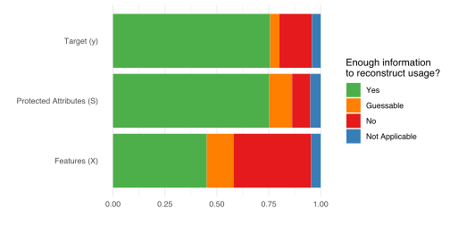
Availability of Code
code_availability_counts <- tibble(
code_available = c("Yes", "No") %>% factor(levels = c("Yes", "No")),
n = c(sum(!is.na(papers$code_url)), sum(is.na(papers$code_url))),
) %>%
mutate(
frac = n / sum(n)
)Warning: Unknown or uninitialised column: `code_url`.
Unknown or uninitialised column: `code_url`.code_availability_counts# A tibble: 2 × 3
code_available n frac
<fct> <int> <dbl>
1 Yes 0 NaN
2 No 0 NaNfig_bar_code_availability <- code_availability_counts %>%
ggplot(aes(
x = n,
y = "",
fill = code_available
)) +
geom_bar(position = position_fill(reverse = TRUE), stat = "identity") +
scale_fill_manual(
values = c(
"No" = "#e41a1c",
"Yes" = "#4daf4a"
)
) +
labs(
x = "",
y = "",
fill = "Code of analyses available?"
) +
theme_minimal() +
theme(
legend.position = "top",
panel.grid.major.y = element_blank()
)
fig_bar_code_availabilityWarning: Removed 2 rows containing missing values (`geom_bar()`).
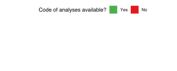
Combined Figure
library(patchwork)
(
fig_bar_enough_info
/
(
# Manually adjust plot to work in the combined setting
fig_bar_code_availability +
scale_y_discrete(labels = "Source Code") +
theme(legend.position = "right") +
labs(fill = "Source Code of\nanalyses available?")
)
) +
plot_layout(heights = c(3, 1)) +
plot_annotation(tag_levels = c('A'))Warning: Removed 2 rows containing missing values (`geom_bar()`).
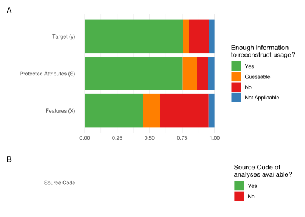
Analysis 2: Lack of Standardization
Demonstrate Lack of Standardization
Show lack of standardization in a kind of sankey / tree diagram, showing how choices differ at each step.
bank_configurations_raw <- papers %>%
# Bank dataset
filter(org_id == "ORG-017") %>%
# Select columns we actually care abt
select(new_dataset_id, col_protected, protected_processing_standard) %>%
# Normalize protected_processing_standard
mutate(
protected_processing_standard = case_match(
protected_processing_standard,
NA ~ "none",
# Note: Not *exactly* the same, but close enough?
"age < 25 or age > 60" ~ "age >= 25 and age < 60",
.default = protected_processing_standard
)
) %>%
mutate(across(everything(), as.factor))
bank_configurations_wide <- bank_configurations_raw %>%
count(pick(everything()))
bank_configurations_wide# A tibble: 7 × 4
new_dataset_id col_protected protected_processing…¹ n
<fct> <fct> <fct> <int>
1 ORG-017-DS-0 "{\"age\": \"age\", \"job\": \"em… age >= 35; job: privi… 1
2 ORG-017-DS-0 "{\"age\": \"age\"}" age >= 25 1
3 ORG-017-DS-0 "{\"age\": \"age\"}" age >= 25 and age < 60 3
4 ORG-017-DS-2 "{\"age\": \"age\"}" ? 1
5 ORG-017-DS-2 "{\"job\": \"profession\"}" none 1
6 ORG-017-DS-2 "{\"marital\": \"marital_status\"… marital == married 1
7 ORG-017-DS-2 "{\"marital\": \"marital_status\"… none 1
# ℹ abbreviated name: ¹protected_processing_standardConfigurations data in long format for a sankey diagram that is NOT converging again, so it will create a tree.
bank_configurations_long_tree <- rbind(
bank_configurations_raw %>%
count(new_dataset_id) %>%
transmute(
from = "Bank",
to = new_dataset_id,
n
),
bank_configurations_raw %>%
count(new_dataset_id, col_protected) %>%
transmute(
from = new_dataset_id,
to = paste(new_dataset_id, col_protected, sep = "-"),
n
),
bank_configurations_raw %>%
count(new_dataset_id, col_protected, protected_processing_standard) %>%
transmute(
from = paste(new_dataset_id, col_protected, sep = "-"),
to = paste(new_dataset_id, col_protected, protected_processing_standard, sep = "-"),
n
)
)
save_reproducibility(bank_configurations_long_tree)
show(bank_configurations_long_tree)| from | to | n |
|---|---|---|
| Bank | ORG-017-DS-0 | 5 |
| Bank | ORG-017-DS-2 | 4 |
| ORG-017-DS-0 | ORG-017-DS-0-{“age”: “age”, “job”: “employment”} | 1 |
| ORG-017-DS-0 | ORG-017-DS-0-{“age”: “age”} | 4 |
| ORG-017-DS-2 | ORG-017-DS-2-{“age”: “age”} | 1 |
| ORG-017-DS-2 | ORG-017-DS-2-{“job”: “profession”} | 1 |
| ORG-017-DS-2 | ORG-017-DS-2-{“marital”: “marital_status”} | 2 |
| ORG-017-DS-0-{“age”: “age”, “job”: “employment”} | ORG-017-DS-0-{“age”: “age”, “job”: “employment”}-age >= 35; job: privileged vs. unprivileged | 1 |
| ORG-017-DS-0-{“age”: “age”} | ORG-017-DS-0-{“age”: “age”}-age >= 25 | 1 |
| ORG-017-DS-0-{“age”: “age”} | ORG-017-DS-0-{“age”: “age”}-age >= 25 and age < 60 | 3 |
| ORG-017-DS-2-{“age”: “age”} | ORG-017-DS-2-{“age”: “age”}-? | 1 |
| ORG-017-DS-2-{“job”: “profession”} | ORG-017-DS-2-{“job”: “profession”}-none | 1 |
| ORG-017-DS-2-{“marital”: “marital_status”} | ORG-017-DS-2-{“marital”: “marital_status”}-marital == married | 1 |
| ORG-017-DS-2-{“marital”: “marital_status”} | ORG-017-DS-2-{“marital”: “marital_status”}-none | 1 |
The generated dataset bank_configurations_long_tree can be passed to https://app.rawgraphs.io/ to create a Sankey diagram.
Impact of Lack of Standardization on Fairness
Here we check how the lack of standardization affects (fairness) outcomes.
library(jsonlite)
Attaching package: 'jsonlite'The following object is masked from 'package:purrr':
flattenbank_results_raw <- read_csv(file.path(data_dir, "raw", "bank-analysis-results.csv")) %>%
select(- ...1) %>%
mutate(
settings = settings %>%
str_replace_all("'", "\"") %>%
map(~ fromJSON(.) %>% paste(collapse = "-&-")) %>%
unlist(),
base_rates = base_rates %>%
str_replace_all(fixed("("), "\"") %>%
str_replace_all(fixed(")"), "\"") %>%
map(~ fromJSON(.))
)New names:
• `` -> `...1`Rows: 1050 Columns: 21
── Column specification ────────────────────────────────────────────────────────
Delimiter: ","
chr (6): ...1, model, settings, base_rates, hash_train, hash_test
dbl (15): seed, accuracy, balanced accuracy, f1, precision, true positive ra...
ℹ Use `spec()` to retrieve the full column specification for this data.
ℹ Specify the column types or set `show_col_types = FALSE` to quiet this message.settings_to_letters <- . %>%
case_match(
"ORG-017-DS-0-&-job_and_age-&-age >= 35; job: privileged vs. unprivileged" ~ "a",
"ORG-017-DS-0-['job_and_age']-age >= 35; job: privileged vs. unprivileged" ~ "a",
"ORG-017-DS-0-&-age-&-age >= 25 and age < 60" ~ "b",
"ORG-017-DS-0-['age']-age >= 25 and age < 60" ~ "b",
"ORG-017-DS-0-&-age-&-age >= 25" ~ "c",
"ORG-017-DS-0-['age']-age >= 25" ~ "c",
"ORG-017-DS-2-&-age-&-?" ~ "d",
"ORG-017-DS-2-['age']-?" ~ "d",
"ORG-017-DS-2-&-job-&-none" ~ "e",
"ORG-017-DS-2-['job']-none" ~ "e",
"ORG-017-DS-2-&-marital-&-marital == married" ~ "f",
"ORG-017-DS-2-['marital']-marital == married" ~ "f",
"ORG-017-DS-2-&-marital-&-none" ~ "g",
"ORG-017-DS-2-['marital']-none" ~ "g"
) %>%
factor(levels = letters[1:7])stopifnot(
bank_results_raw %>%
transmute(
settings,
sett_lett = settings_to_letters(settings)
) %>%
filter(
!(sett_lett %in% letters)
) %>%
nrow() == 0
)bank_rates <- bank_results_raw %>%
distinct(settings, base_rates) %>%
mutate(
names = base_rates %>%
map(~ names(.)),
values = base_rates %>%
map(~ unlist(.))
) %>%
unnest(c(names, values)) %>%
select(-base_rates) %>%
mutate(
names = names %>%
str_replace_all("', ", "-") %>%
str_remove_all("'") %>%
str_remove_all(",") %>%
str_trim()
)
bank_rates# A tibble: 25 × 3
settings names values
<chr> <chr> <int>
1 ORG-017-DS-0-&-age-&-age >= 25 and age < 60 True 38927
2 ORG-017-DS-0-&-age-&-age >= 25 and age < 60 False 2261
3 ORG-017-DS-2-&-marital-&-none married 27214
4 ORG-017-DS-2-&-marital-&-none single 12790
5 ORG-017-DS-2-&-marital-&-none divorced 5207
6 ORG-017-DS-2-&-job-&-none blue-collar 9732
7 ORG-017-DS-2-&-job-&-none management 9458
8 ORG-017-DS-2-&-job-&-none technician 7597
9 ORG-017-DS-2-&-job-&-none admin. 5171
10 ORG-017-DS-2-&-job-&-none services 4154
# ℹ 15 more rowsbank_rates %>%
ggplot(aes(
x = names,
y = values
)) +
geom_col() +
facet_wrap(~ settings_to_letters(settings), scales = "free") +
theme(
axis.ticks.x = element_blank(),
axis.text.x = element_blank()
)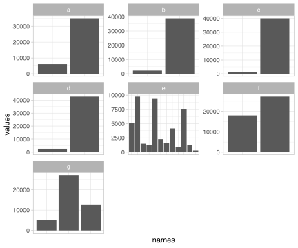
Actually run an analysis for the different versions we see and look at how much they change.
bank_results <- bank_results_raw %>%
select(-base_rates)bank_results %>%
group_by(settings) %>%
arrange(equalized_odds_difference) %>%
slice(1)# A tibble: 7 × 19
# Groups: settings [7]
model seed settings hash_train hash_test accuracy `balanced accuracy` f1
<chr> <dbl> <chr> <chr> <chr> <dbl> <dbl> <dbl>
1 Weight… 9401 ORG-017… 7363acd64… 7e4ed50a… 0.912 0.705 0.533
2 LightG… 3032 ORG-017… 300d1430f… 0bcd0c1c… 0.914 0.692 0.512
3 KNeigh… 8811 ORG-017… fb2659e7a… 42d8e12b… 0.905 0.728 0.535
4 XGBoost 80539 ORG-017… b7717a0a7… 3736d333… 0.904 0.664 0.470
5 KNeigh… 1563 ORG-017… 56177b6bb… 4861efa6… 0.882 0.614 0.342
6 ExtraT… 115 ORG-017… 0914758e6… b87b21dc… 0.903 0.653 0.441
7 LightG… 80539 ORG-017… 6b8b84c4e… 3604d0fd… 0.904 0.671 0.481
# ℹ 11 more variables: precision <dbl>, `true positive rate` <dbl>,
# `true negative rate` <dbl>, `false positive rate` <dbl>,
# `false negative rate` <dbl>, `selection rate` <dbl>, count <dbl>,
# equalized_odds_difference <dbl>, equalized_odds_ratio <dbl>,
# demographic_parity_difference <dbl>, demographic_parity_ratio <dbl>bank_results %>%
group_by(settings) %>%
arrange(f1) %>%
slice(1)# A tibble: 7 × 19
# Groups: settings [7]
model seed settings hash_train hash_test accuracy `balanced accuracy` f1
<chr> <dbl> <chr> <chr> <chr> <dbl> <dbl> <dbl>
1 ExtraT… 3032 ORG-017… 300d1430f… 0bcd0c1c… 0.901 0.648 0.420
2 ExtraT… 3032 ORG-017… 300d1430f… 0bcd0c1c… 0.901 0.648 0.420
3 ExtraT… 3032 ORG-017… 80848d80a… c7887bba… 0.903 0.658 0.441
4 KNeigh… 115 ORG-017… 723ce08e2… cdc1d2fd… 0.878 0.611 0.336
5 KNeigh… 9401 ORG-017… 214cf0756… e5372e80… 0.878 0.610 0.338
6 KNeigh… 9401 ORG-017… 09e3ecf7a… 40c6622b… 0.878 0.610 0.338
7 KNeigh… 9401 ORG-017… 09e3ecf7a… 40c6622b… 0.878 0.610 0.338
# ℹ 11 more variables: precision <dbl>, `true positive rate` <dbl>,
# `true negative rate` <dbl>, `false positive rate` <dbl>,
# `false negative rate` <dbl>, `selection rate` <dbl>, count <dbl>,
# equalized_odds_difference <dbl>, equalized_odds_ratio <dbl>,
# demographic_parity_difference <dbl>, demographic_parity_ratio <dbl>bank_results %>%
group_by(settings) %>%
arrange(accuracy) %>%
slice(1)# A tibble: 7 × 19
# Groups: settings [7]
model seed settings hash_train hash_test accuracy `balanced accuracy` f1
<chr> <dbl> <chr> <chr> <chr> <dbl> <dbl> <dbl>
1 KNeigh… 6371 ORG-017… 48015c50e… aa0fbac5… 0.893 0.719 0.513
2 KNeigh… 6371 ORG-017… 48015c50e… aa0fbac5… 0.893 0.719 0.513
3 KNeigh… 6371 ORG-017… 308d7cf7f… a79312e2… 0.893 0.719 0.513
4 KNeigh… 80539 ORG-017… b7717a0a7… 3736d333… 0.875 0.624 0.364
5 KNeigh… 9401 ORG-017… 214cf0756… e5372e80… 0.876 0.612 0.340
6 KNeigh… 9401 ORG-017… 09e3ecf7a… 40c6622b… 0.876 0.612 0.340
7 KNeigh… 9401 ORG-017… 09e3ecf7a… 40c6622b… 0.876 0.612 0.340
# ℹ 11 more variables: precision <dbl>, `true positive rate` <dbl>,
# `true negative rate` <dbl>, `false positive rate` <dbl>,
# `false negative rate` <dbl>, `selection rate` <dbl>, count <dbl>,
# equalized_odds_difference <dbl>, equalized_odds_ratio <dbl>,
# demographic_parity_difference <dbl>, demographic_parity_ratio <dbl>Overall Variation
bank_results %>%
select(-count) %>%
select(model, settings, where(is.numeric)) %>%
pivot_longer(c(-model, -settings)) %>%
mutate(
metric_group = case_match(
name,
"accuracy" ~ "Performance",
"balanced accuracy" ~ "Performance",
"f1" ~ "Performance",
"equalized_odds_difference" ~ "Fairness",
"equalized_odds_ratio" ~ "Fairness",
"demographic_parity_difference" ~ "Fairness",
"demographic_parity_ratio" ~ "Fairness",
"true positive rate" ~ "Confusion",
"false positive rate" ~ "Confusion",
"true negative rate" ~ "Confusion",
"false negative rate" ~ "Confusion"
),
name = name %>%
str_replace_all("_", " ") %>%
str_replace_all("demographic", "dem.") %>%
str_replace_all("equalized", "eq.") %>%
str_to_title() %>%
factor(levels = c(
"True Positive Rate",
"False Positive Rate",
"True Negative Rate",
"False Negative Rate",
"Eq. Odds Difference",
"Eq. Odds Ratio",
"Dem. Parity Difference",
"Dem. Parity Ratio",
"Accuracy",
"Balanced Accuracy",
"F1"
))
) %>%
filter(!is.na(metric_group)) %>%
ggplot(aes(
x = value,
fill = metric_group
)) +
geom_histogram() +
facet_wrap(. ~ name, scales = "free_y") +
theme_minimal() +
labs(
x = "",
y = "Count",
fill = ""
) +
scale_fill_brewer(palette = "Set1")`stat_bin()` using `bins = 30`. Pick better value with `binwidth`.
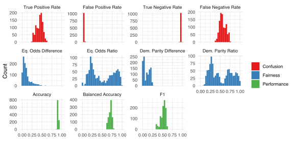
Correlation of Models in Different Settings
Sanity checks:
# Double check that there's no duplicate values
stopifnot(
(bank_results %>%
count(settings, model, seed) %>%
pull(n) %>%
max()
) == 1
)
stopifnot(
# There are 15 models and they should always use the same data version
# However sometimes two different settings may use the same data version,
# that's why we use modulo here
all(
bank_results %>%
count(hash_train, hash_test) %>%
pull(n) %% 15 == 0
)
)Compute Spearman rank correlation between rank of different model’s in the configuration settings
compute_ranks <- function(
data,
order_by_col,
letters = F
) {
df <- data
df$ordering_metric <- df[order_by_col]
df %>%
mutate(
settings = if (letters) { settings_to_letters(settings) } else { settings }
) %>%
arrange(settings) %>%
group_by(settings) %>%
# Get ranks based on a certain metric
arrange(ordering_metric, model) %>%
mutate(rank = row_number()) %>%
select(settings, model, rank) %>%
arrange(settings)
}
# Note spearman == pearson here, as we're already generating ranks
# TODO: Check whether we it's OK to precompute ranks for kendall's tau
compute_rank_correlations_single_seed <- function(
data,
order_by_col,
cor_method = "spearman",
# Use letters instead of full settings as names
letters = F,
# Return full cormat or only half? (since they are symmetric)
full = T
) {
stopifnot(is.character(order_by_col))
cormat <- data %>%
compute_ranks(order_by_col = order_by_col, letters = letters) %>%
# Generate a column for each configuration, with the ranks as its values
pivot_wider(names_from = settings, values_from = rank, id_cols = model) %>%
# Order by model
arrange(model) %>%
select(-model) %>%
cor(method = cor_method) %>%
as.data.frame()
if (!full) {
cormat[!lower.tri(cormat, diag = F)] <- NA
}
cormat
}
compute_rank_correlations <- function (
data,
...,
aggregate_via_mean = TRUE,
# Print out a summary?
summary = F,
# Should the mean be calculated before or after correlations?
# This should be FALSE, to correspond to the paper.
aggregate_before_cor = F
) {
# There is an odd bug with group_map and "..." that leads to the grouping
# variable being passed as "..."? Seems to not really be documented.
# We therefore can't use a lambda and need to create this function
call_cor_func <- function (df_group) {
compute_rank_correlations_single_seed(df_group, ...) %>%
rownames_to_column("scenario")
}
if (!aggregate_before_cor) {
# Calculate correlations for every seed
output <- data %>%
group_by(seed) %>%
group_map(~ call_cor_func(.x)) %>%
bind_rows()
if (aggregate_via_mean) {
# Use mean correlations to keep old output format of a single matrix
output <- output %>%
group_by(scenario) %>%
summarise(across(everything(), mean)) %>%
column_to_rownames("scenario")
}
} else {
# Aggregate over seeds and then compute correlations
stopifnot(aggregate_via_mean)
warning("Aggregating before Correlations, this is just for robustness")
output <- data %>%
group_by(settings, model) %>%
summarise(across(where(is.numeric), mean)) %>%
call_cor_func() %>%
column_to_rownames("scenario")
}
if (summary) {
stopifnot(aggregate_via_mean)
cor_values <- output[lower.tri(output, diag = F)]
cat(
"Correlation Summary:\n",
" Mean: ", mean(cor_values), "\n",
" Median: ", median(cor_values), "\n",
" Min: ", min(cor_values), "\n",
" Max: ", max(cor_values), "\n",
" SD: ", sd(cor_values), "\n",
" N: ", length(cor_values), "\n",
sep = ""
)
}
return (output)
}correlation_plot <- function(data, order_by_col, cor_method = "spearman", invert = F) {
cormat <- compute_rank_correlations(
data, order_by_col, cor_method, letters = T, full = F, summary = F
)
cormat_ordered <- cormat %>%
rownames_to_column("setting_1") %>%
pivot_longer(-setting_1, names_to = "setting_2", values_to = "cor") %>%
# na.omit() %>%
rowwise() %>%
mutate(
combined = paste(sort(unlist(strsplit(paste0(setting_1, setting_2), ""))), collapse = "")
) %>%
select(-starts_with("setting_")) %>%
separate(combined, into = c("filler", "setting_1", "setting_2"), sep = "") %>%
select(-filler) %>%
mutate(
# Reverse order of setting 2 (the one with "a")
setting_2 = setting_2 %>%
fct_rev()
)
if (invert) {
cormat_ordered <- cormat_ordered %>%
mutate(
tmp_sett_1 = setting_1,
setting_1 = setting_2 %>% fct_rev(),
setting_2 = tmp_sett_1 %>% fct_rev()
)
}
cor_symbol <- case_match(
cor_method,
# Sadly, there's a bug when rendering to PDF and
# using greek characters...
"spearman" ~ "rho", # "\u03C1", # rho
"kendall" ~ "tau", # "\u03C4", # tau
)
p <- cormat_ordered %>%
ggplot(aes(
x = setting_1,
y = setting_2,
label = cor %>%
round(digits = 2),
fill = cor
)) +
geom_tile() +
geom_text() +
theme_classic() +
scale_fill_distiller(
type = "div",
limits = c(-1, 1),
palette = "RdBu",
na.value = "black"
) +
labs(
x = "Scenario",
y = "Scenario",
fill = paste0("Correlation (", cor_symbol, ")")
) +
# Transparent background
theme(
panel.background = element_rect(fill = "transparent", colour = NA),
plot.background = element_rect(fill = "transparent",colour = NA),
plot.title = element_text(hjust = 0.5, size = 13),
plot.caption = element_text(hjust = 0.5, size = 13)
)
if (invert) {
p <- p +
scale_x_discrete(position = "top") +
scale_y_discrete(position = "right")
}
p
}double_correlation_plot <- function (
data,
col_bot_left,
col_top_right,
col_bot_left_title = str_to_title(str_replace_all(col_bot_left, "_", " ")),
col_top_right_title = str_to_title(str_replace_all(col_top_right, "_", " "))
) {
size <- 4
spacing <- 1
corplot_bl <- correlation_plot(data, col_bot_left) +
labs(caption = col_bot_left_title)
corplot_tr <- correlation_plot(data, col_top_right, invert = T) +
labs(title = col_top_right_title)
(
corplot_bl + corplot_tr
) + plot_layout(
design = c(
area(1 + spacing, 1, size, size - spacing),
area(1, 1 + spacing, size-spacing, size)
),
guides = "collect"
) +
plot_annotation(tag_levels = c('A')) &
# Remove rho as it gets misrendered in PDFs
labs(fill = "Correlation")
}correlation_plot(bank_results, "f1")Warning: Removed 28 rows containing missing values (`geom_text()`).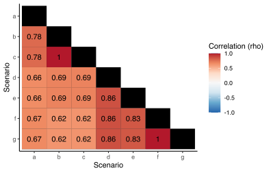
correlation_plot(bank_results, "equalized_odds_difference", invert = T)Warning: Removed 28 rows containing missing values (`geom_text()`).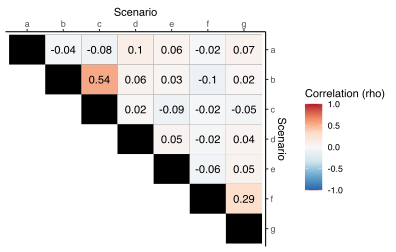
double_correlation_plot(
bank_results,
"balanced accuracy",
"demographic_parity_difference"
)Warning: Removed 28 rows containing missing values (`geom_text()`).
Removed 28 rows containing missing values (`geom_text()`).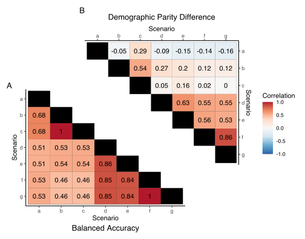
scatter_plot <- function(data, order_by_col, settings_to_compare, filter_seed = 80539) {
stopifnot(length(settings_to_compare) == 2)
print(paste("Only showing single seed:", filter_seed))
colname_nice <- order_by_col %>%
str_replace_all("_", " ") %>%
str_to_title()
data %>%
filter(seed == filter_seed) %>%
compute_ranks(order_by_col, letters = T) %>%
pivot_wider(id_cols = model, names_from = "settings", values_from = "rank") %>%
ggplot(aes_string(
x = settings_to_compare[[1]],
y = settings_to_compare[[2]]
)) +
geom_point() +
geom_smooth(method = "lm", color = "darkgrey", linetype = "dotted") +
labs(
x = paste0(colname_nice, " (Scenario ", settings_to_compare[[1]], ")"),
y = paste0(colname_nice, " (Scenario ", settings_to_compare[[2]], ")")
)
}scatter_plot(bank_results, "equalized_odds_difference", c("c", "d"))[1] "Only showing single seed: 80539"Warning: `aes_string()` was deprecated in ggplot2 3.0.0.
ℹ Please use tidy evaluation idioms with `aes()`.
ℹ See also `vignette("ggplot2-in-packages")` for more information.`geom_smooth()` using formula = 'y ~ x'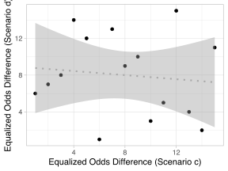
scatter_plot(bank_results, "f1", c("c", "d"))[1] "Only showing single seed: 80539"`geom_smooth()` using formula = 'y ~ x'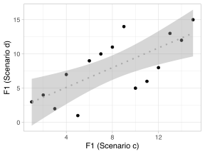
Performance: Accuracy
compute_rank_correlations(bank_results, "accuracy", letters = T, summary =T) %>% show()Correlation Summary:
Mean: 0.8472449
Median: 0.8267857
Min: 0.8017857
Max: 1
SD: 0.05880823
N: 21| a | b | c | d | e | f | g | |
|---|---|---|---|---|---|---|---|
| a | 1.0000000 | 0.9107143 | 0.9107143 | 0.8221429 | 0.8335714 | 0.8267857 | 0.8267857 |
| b | 0.9107143 | 1.0000000 | 1.0000000 | 0.8210714 | 0.8139286 | 0.8017857 | 0.8017857 |
| c | 0.9107143 | 1.0000000 | 1.0000000 | 0.8210714 | 0.8139286 | 0.8017857 | 0.8017857 |
| d | 0.8221429 | 0.8210714 | 0.8210714 | 1.0000000 | 0.8221429 | 0.8460714 | 0.8460714 |
| e | 0.8335714 | 0.8139286 | 0.8139286 | 0.8221429 | 1.0000000 | 0.8350000 | 0.8350000 |
| f | 0.8267857 | 0.8017857 | 0.8017857 | 0.8460714 | 0.8350000 | 1.0000000 | 1.0000000 |
| g | 0.8267857 | 0.8017857 | 0.8017857 | 0.8460714 | 0.8350000 | 1.0000000 | 1.0000000 |
Performance: Balanced Accuracy
compute_rank_correlations(bank_results, "balanced accuracy", letters = T, summary =T) %>% show()Correlation Summary:
Mean: 0.6509864
Median: 0.5378571
Min: 0.4571429
Max: 1
SD: 0.1889618
N: 21| a | b | c | d | e | f | g | |
|---|---|---|---|---|---|---|---|
| a | 1.0000000 | 0.6828571 | 0.6828571 | 0.5107143 | 0.5096429 | 0.5339286 | 0.5339286 |
| b | 0.6828571 | 1.0000000 | 1.0000000 | 0.5325000 | 0.5378571 | 0.4571429 | 0.4571429 |
| c | 0.6828571 | 1.0000000 | 1.0000000 | 0.5325000 | 0.5378571 | 0.4571429 | 0.4571429 |
| d | 0.5107143 | 0.5325000 | 0.5325000 | 1.0000000 | 0.8625000 | 0.8532143 | 0.8532143 |
| e | 0.5096429 | 0.5378571 | 0.5378571 | 0.8625000 | 1.0000000 | 0.8392857 | 0.8392857 |
| f | 0.5339286 | 0.4571429 | 0.4571429 | 0.8532143 | 0.8392857 | 1.0000000 | 1.0000000 |
| g | 0.5339286 | 0.4571429 | 0.4571429 | 0.8532143 | 0.8392857 | 1.0000000 | 1.0000000 |
Performance: F1
compute_rank_correlations(bank_results, "f1", letters = T, summary =T) %>% show()Correlation Summary:
Mean: 0.747483
Median: 0.6903571
Min: 0.6246429
Max: 1
SD: 0.1192059
N: 21| a | b | c | d | e | f | g | |
|---|---|---|---|---|---|---|---|
| a | 1.0000000 | 0.7757143 | 0.7757143 | 0.6567857 | 0.6560714 | 0.6664286 | 0.6664286 |
| b | 0.7757143 | 1.0000000 | 1.0000000 | 0.6892857 | 0.6903571 | 0.6246429 | 0.6246429 |
| c | 0.7757143 | 1.0000000 | 1.0000000 | 0.6892857 | 0.6903571 | 0.6246429 | 0.6246429 |
| d | 0.6567857 | 0.6892857 | 0.6892857 | 1.0000000 | 0.8557143 | 0.8596429 | 0.8596429 |
| e | 0.6560714 | 0.6903571 | 0.6903571 | 0.8557143 | 1.0000000 | 0.8335714 | 0.8335714 |
| f | 0.6664286 | 0.6246429 | 0.6246429 | 0.8596429 | 0.8335714 | 1.0000000 | 1.0000000 |
| g | 0.6664286 | 0.6246429 | 0.6246429 | 0.8596429 | 0.8335714 | 1.0000000 | 1.0000000 |
Fairness: Equalized Odds Difference
compute_rank_correlations(bank_results, "equalized_odds_difference", letters = T, summary =T) %>% show()Correlation Summary:
Mean: 0.04027211
Median: 0.02035714
Min: -0.1039286
Max: 0.5407143
SD: 0.1422505
N: 21| a | b | c | d | e | f | g | |
|---|---|---|---|---|---|---|---|
| a | 1.0000000 | -0.0396429 | -0.0753571 | 0.1000000 | 0.0650000 | -0.0178571 | 0.0671429 |
| b | -0.0396429 | 1.0000000 | 0.5407143 | 0.0567857 | 0.0332143 | -0.1039286 | 0.0203571 |
| c | -0.0753571 | 0.5407143 | 1.0000000 | 0.0164286 | -0.0882143 | -0.0239286 | -0.0471429 |
| d | 0.1000000 | 0.0567857 | 0.0164286 | 1.0000000 | 0.0471429 | -0.0250000 | 0.0435714 |
| e | 0.0650000 | 0.0332143 | -0.0882143 | 0.0471429 | 1.0000000 | -0.0635714 | 0.0535714 |
| f | -0.0178571 | -0.1039286 | -0.0239286 | -0.0250000 | -0.0635714 | 1.0000000 | 0.2864286 |
| g | 0.0671429 | 0.0203571 | -0.0471429 | 0.0435714 | 0.0535714 | 0.2864286 | 1.0000000 |
Fairness: Demographic Parity Difference
compute_rank_correlations(bank_results, "demographic_parity_difference", letters = T, summary =T) %>% show()Correlation Summary:
Mean: 0.2319728
Median: 0.1571429
Min: -0.1607143
Max: 0.8621429
SD: 0.3037602
N: 21| a | b | c | d | e | f | g | |
|---|---|---|---|---|---|---|---|
| a | 1.0000000 | -0.0542857 | 0.2896429 | -0.0950000 | -0.1475000 | -0.1389286 | -0.1607143 |
| b | -0.0542857 | 1.0000000 | 0.5396429 | 0.2728571 | 0.1989286 | 0.1232143 | 0.1203571 |
| c | 0.2896429 | 0.5396429 | 1.0000000 | 0.0471429 | 0.1571429 | 0.0235714 | 0.0042857 |
| d | -0.0950000 | 0.2728571 | 0.0471429 | 1.0000000 | 0.6350000 | 0.5546429 | 0.5453571 |
| e | -0.1475000 | 0.1989286 | 0.1571429 | 0.6350000 | 1.0000000 | 0.5610714 | 0.5328571 |
| f | -0.1389286 | 0.1232143 | 0.0235714 | 0.5546429 | 0.5610714 | 1.0000000 | 0.8621429 |
| g | -0.1607143 | 0.1203571 | 0.0042857 | 0.5453571 | 0.5328571 | 0.8621429 | 1.0000000 |
Spread of Metric within Settings
bank_results %>%
group_by(settings) %>%
summarise(
mean_eod = mean(equalized_odds_difference),
sd_eod = sd(equalized_odds_difference),
min_eod = min(equalized_odds_difference),
max_eod = max(equalized_odds_difference),
spread_eod = max_eod - min_eod
)# A tibble: 7 × 6
settings mean_eod sd_eod min_eod max_eod spread_eod
<chr> <dbl> <dbl> <dbl> <dbl> <dbl>
1 ORG-017-DS-0-&-age-&-age >= 25 0.0809 0.0424 0.0150 0.210 0.195
2 ORG-017-DS-0-&-age-&-age >= 25 and… 0.138 0.0466 0.0664 0.266 0.199
3 ORG-017-DS-0-&-job_and_age-&-age >… 0.0334 0.0277 0.00143 0.129 0.128
4 ORG-017-DS-2-&-age-&-? 0.0980 0.0299 0.0315 0.182 0.151
5 ORG-017-DS-2-&-job-&-none 0.303 0.0902 0.124 0.597 0.473
6 ORG-017-DS-2-&-marital-&-marital =… 0.0215 0.0140 0.00228 0.0629 0.0606
7 ORG-017-DS-2-&-marital-&-none 0.0522 0.0239 0.0102 0.112 0.102 bank_spread_stats <- bank_results %>%
mutate(settings = settings_to_letters(settings)) %>%
group_by(settings, seed) %>%
summarise(
across(
all_of(
c("equalized_odds_difference", "demographic_parity_difference", "f1", "balanced accuracy")
),
.fns = list(
mean=mean,
sd=sd,
min=min,
max=max,
spread= ~ max(.) - min(.)
),
.names = "{fn}_{col}"
)
)`summarise()` has grouped output by 'settings'. You can override using the
`.groups` argument.bank_spread_stats# A tibble: 70 × 22
# Groups: settings [7]
settings seed mean_equalized_odds_difference sd_equalized_odds_difference
<fct> <dbl> <dbl> <dbl>
1 a 115 0.0241 0.0120
2 a 1563 0.0147 0.0121
3 a 2412 0.0420 0.0187
4 a 3032 0.0513 0.0246
5 a 6371 0.0237 0.0183
6 a 8060 0.0163 0.0117
7 a 8811 0.0204 0.0149
8 a 9192 0.0925 0.0207
9 a 9401 0.0214 0.0107
10 a 80539 0.0274 0.0155
# ℹ 60 more rows
# ℹ 18 more variables: min_equalized_odds_difference <dbl>,
# max_equalized_odds_difference <dbl>,
# spread_equalized_odds_difference <dbl>,
# mean_demographic_parity_difference <dbl>,
# sd_demographic_parity_difference <dbl>,
# min_demographic_parity_difference <dbl>, …# Aggergate over all seeds
bank_spread_stats %>%
group_by(settings) %>%
select(-seed) %>%
# Add mean to all colnames to be clear on what we actually do here
summarise(across(where(is.numeric), list(mean=mean), .names = "{fn}_{col}")) %>%
t() [,1] [,2]
settings "a" "b"
mean_mean_equalized_odds_difference "0.03338364" "0.13781917"
mean_sd_equalized_odds_difference "0.01592899" "0.04035419"
mean_min_equalized_odds_difference "0.011290210" "0.087920135"
mean_max_equalized_odds_difference "0.06614632" "0.21226928"
mean_spread_equalized_odds_difference "0.05485611" "0.12434914"
mean_mean_demographic_parity_difference "0.00798597" "0.19730933"
mean_sd_demographic_parity_difference "0.004500188" "0.016086296"
mean_min_demographic_parity_difference "0.001850631" "0.168288750"
mean_max_demographic_parity_difference "0.01759244" "0.22382002"
mean_spread_demographic_parity_difference "0.01574180" "0.05553127"
mean_mean_f1 "0.5432657" "0.5382784"
mean_sd_f1 "0.04012439" "0.04725277"
mean_min_f1 "0.4681069" "0.4420686"
mean_max_f1 "0.5994607" "0.5969821"
mean_spread_f1 "0.1313538" "0.1549135"
mean_mean_balanced accuracy "0.7206558" "0.7178024"
mean_sd_balanced accuracy "0.02577457" "0.03020700"
mean_min_balanced accuracy "0.6743394" "0.6584088"
mean_max_balanced accuracy "0.7639080" "0.7601674"
mean_spread_balanced accuracy "0.08956858" "0.10175862"
[,3] [,4]
settings "c" "d"
mean_mean_equalized_odds_difference "0.08093182" "0.09797140"
mean_sd_equalized_odds_difference "0.02752027" "0.02568929"
mean_min_equalized_odds_difference "0.042007798" "0.058264341"
mean_max_equalized_odds_difference "0.13432762" "0.14694636"
mean_spread_equalized_odds_difference "0.09231982" "0.08868202"
mean_mean_demographic_parity_difference "0.10342622" "0.14917446"
mean_sd_demographic_parity_difference "0.014654802" "0.050493517"
mean_min_demographic_parity_difference "0.077709219" "0.039360977"
mean_max_demographic_parity_difference "0.13560512" "0.21827253"
mean_spread_demographic_parity_difference "0.05789590" "0.17891156"
mean_mean_f1 "0.5382784" "0.4949522"
mean_sd_f1 "0.04725277" "0.07301011"
mean_min_f1 "0.4420686" "0.3488402"
mean_max_f1 "0.5969821" "0.5844598"
mean_spread_f1 "0.1549135" "0.2356196"
mean_mean_balanced accuracy "0.7178024" "0.6891337"
mean_sd_balanced accuracy "0.03020700" "0.04136533"
mean_min_balanced accuracy "0.6584088" "0.6166868"
mean_max_balanced accuracy "0.7601674" "0.7537118"
mean_spread_balanced accuracy "0.10175862" "0.13702495"
[,5] [,6]
settings "e" "f"
mean_mean_equalized_odds_difference "0.30323308" "0.02151767"
mean_sd_equalized_odds_difference "0.06856436" "0.01093054"
mean_min_equalized_odds_difference "0.189932485" "0.004749911"
mean_max_equalized_odds_difference "0.43093732" "0.04232151"
mean_spread_equalized_odds_difference "0.24100483" "0.03757160"
mean_mean_demographic_parity_difference "0.16624170" "0.02011551"
mean_sd_demographic_parity_difference "0.047861879" "0.006636087"
mean_min_demographic_parity_difference "0.062298773" "0.007268361"
mean_max_demographic_parity_difference "0.22512032" "0.03044725"
mean_spread_demographic_parity_difference "0.16282155" "0.02317889"
mean_mean_f1 "0.5001323" "0.4930186"
mean_sd_f1 "0.07113321" "0.07394796"
mean_min_f1 "0.3501011" "0.3501011"
mean_max_f1 "0.5822069" "0.5898585"
mean_spread_f1 "0.2321058" "0.2397574"
mean_mean_balanced accuracy "0.6916703" "0.6882341"
mean_sd_balanced accuracy "0.03971149" "0.04221468"
mean_min_balanced accuracy "0.6167490" "0.6167490"
mean_max_balanced accuracy "0.7503609" "0.7587968"
mean_spread_balanced accuracy "0.13361198" "0.14204785"
[,7]
settings "g"
mean_mean_equalized_odds_difference "0.05221989"
mean_sd_equalized_odds_difference "0.02074804"
mean_min_equalized_odds_difference "0.023483619"
mean_max_equalized_odds_difference "0.09182670"
mean_spread_equalized_odds_difference "0.06834308"
mean_mean_demographic_parity_difference "0.02787939"
mean_sd_demographic_parity_difference "0.008381926"
mean_min_demographic_parity_difference "0.011329464"
mean_max_demographic_parity_difference "0.04160422"
mean_spread_demographic_parity_difference "0.03027475"
mean_mean_f1 "0.4930186"
mean_sd_f1 "0.07394796"
mean_min_f1 "0.3501011"
mean_max_f1 "0.5898585"
mean_spread_f1 "0.2397574"
mean_mean_balanced accuracy "0.6882341"
mean_sd_balanced accuracy "0.04221468"
mean_min_balanced accuracy "0.6167490"
mean_max_balanced accuracy "0.7587968"
mean_spread_balanced accuracy "0.14204785" # Aggergate over all scenarios and seeds
bank_spread_stats %>%
ungroup() %>%
select(-seed) %>%
# Add mean to all colnames to be clear on what we actually do here
summarise(across(where(is.numeric), list(mean=mean), .names = "{fn}_{col}")) %>%
t() [,1]
mean_mean_equalized_odds_difference 0.10386810
mean_sd_equalized_odds_difference 0.02996224
mean_min_equalized_odds_difference 0.05966407
mean_max_equalized_odds_difference 0.16068216
mean_spread_equalized_odds_difference 0.10101809
mean_mean_demographic_parity_difference 0.09601894
mean_sd_demographic_parity_difference 0.02123067
mean_min_demographic_parity_difference 0.05258660
mean_max_demographic_parity_difference 0.12749456
mean_spread_demographic_parity_difference 0.07490796
mean_mean_f1 0.51442061
mean_sd_f1 0.06095274
mean_min_f1 0.39305539
mean_max_f1 0.59140124
mean_spread_f1 0.19834585
mean_mean_balanced accuracy 0.70193326
mean_sd_balanced accuracy 0.03595639
mean_min_balanced accuracy 0.63687011
mean_max_balanced accuracy 0.75798703
mean_spread_balanced accuracy 0.12111692Analysis 3: Reproducing Lack of Standardization Results with the Methodology of Friedler et. al. (2019)
files <- fs::dir_ls(file.path(data_dir, "raw", "friedler-reproduction"), recurse = T, glob = "*_numerical.csv")
length(files) %>% print()[1] 7friedler_results_raw <- lapply(files, function(file_path) {
file_name <- basename(file_path)
vroom::vroom(file_path, show_col_types=FALSE) %>%
mutate(filename = file_name) %>%
relocate(filename)
}) %>%
bind_rows()friedler_results <- friedler_results_raw %>%
mutate(
settings = str_remove(filename, "-full_data_.*_numerical.csv"),
settings_letter = settings_to_letters(settings)
) %>%
select(-filename) %>%
relocate(starts_with("settings_")) %>%
# Match column names to bank-results
rename(
scenario = settings_letter,
seed = "run-id"
) %>%
mutate(
model = algorithm
)friedler_algo_counts <- friedler_results %>%
count(model) %>%
arrange(n) %>%
mutate(keep = n == max(n))
dropped_algos <- friedler_algo_counts %>% filter(!keep)
kept_algos <- friedler_algo_counts %>% filter(keep)
friedler_all <- friedler_results %>%
# Get rid of any models that did not run across all scenarios
# (as they will prevent correlations from being computed!)
anti_join(dropped_algos)Joining with `by = join_by(model)`Algorithms, that were kept: DecisionTree, Feldman-DecisionTree, Feldman-GaussianNB, Feldman-GaussianNB-DIavgall, Feldman-GaussianNB-accuracy, Feldman-LR, Feldman-SVM, Feldman-SVM-DIavgall, Feldman-SVM-accuracy, GaussianNB, LR, SVM (N = 12)
Algorithms, that were removed: (N = 0)
friedler_all %>%
compute_rank_correlations("accuracy", letters = T, summary = T)Correlation Summary:
Mean: 0.9148851
Median: 0.9223776
Min: 0.8055944
Max: 0.9734266
SD: 0.05757252
N: 21 a b c d e f g
a 1.0000000 0.9223776 0.8426573 0.9734266 0.9650350 0.9531469 0.9685315
b 0.9223776 1.0000000 0.8377622 0.9181818 0.9132867 0.9216783 0.9167832
c 0.8426573 0.8377622 1.0000000 0.8356643 0.8377622 0.8055944 0.8307692
d 0.9734266 0.9181818 0.8356643 1.0000000 0.9678322 0.9503497 0.9685315
e 0.9650350 0.9132867 0.8377622 0.9678322 1.0000000 0.9524476 0.9692308
f 0.9531469 0.9216783 0.8055944 0.9503497 0.9524476 1.0000000 0.9615385
g 0.9685315 0.9167832 0.8307692 0.9685315 0.9692308 0.9615385 1.0000000friedler_all %>%
compute_rank_correlations("DIbinary", letters = T, summary = T)Correlation Summary:
Mean: 0.2456876
Median: 0.2237762
Min: -0.134965
Max: 0.7552448
SD: 0.2633538
N: 21 a b c d e f g
a 1.0000000 0.1230769 0.1062937 0.1286713 0.22377622 0.1258741 0.34965035
b 0.1230769 1.0000000 0.4363636 0.7552448 -0.11678322 0.5279720 0.35104895
c 0.1062937 0.4363636 1.0000000 0.2993007 -0.12517483 0.2426573 0.19020979
d 0.1286713 0.7552448 0.2993007 1.0000000 -0.10139860 0.6083916 0.55034965
e 0.2237762 -0.1167832 -0.1251748 -0.1013986 1.00000000 -0.1349650 0.03216783
f 0.1258741 0.5279720 0.2426573 0.6083916 -0.13496503 1.0000000 0.58671329
g 0.3496503 0.3510490 0.1902098 0.5503497 0.03216783 0.5867133 1.00000000correlation_plot(friedler_all, "accuracy")Warning: Removed 28 rows containing missing values (`geom_text()`).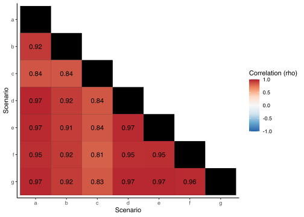
correlation_plot(friedler_all, "DIbinary", invert = T)Warning: Removed 28 rows containing missing values (`geom_text()`).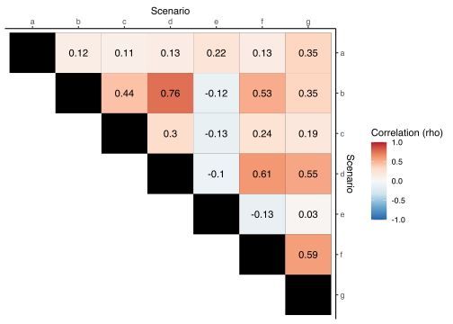
Re DIbinary:
This metric calculates disparate imapct in the sense of the 80% rule before the 80% threshold is applied. This is described as DI in: https://arxiv.org/abs/1412.3756 If there are no positive protected classifications, 0.0 is returned.
Multiple protected classes are treated as one large group, so that this compares the privileged class to all non-privileged classes as a group.
double_correlation_plot(
friedler_all,
"accuracy", "DIbinary",
col_top_right_title = "Disparate Impact (binary)"
)Warning: Removed 28 rows containing missing values (`geom_text()`).
Removed 28 rows containing missing values (`geom_text()`).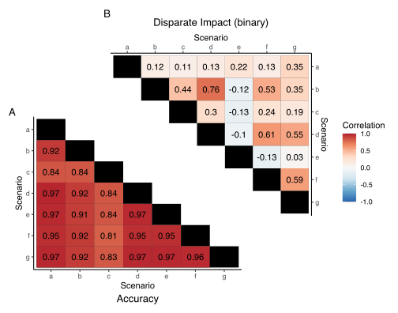